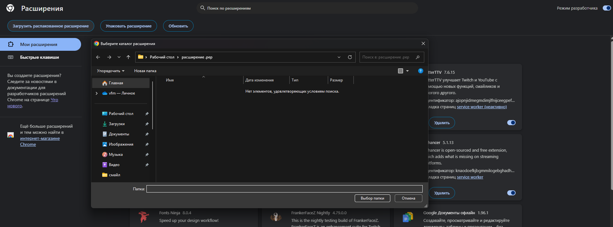
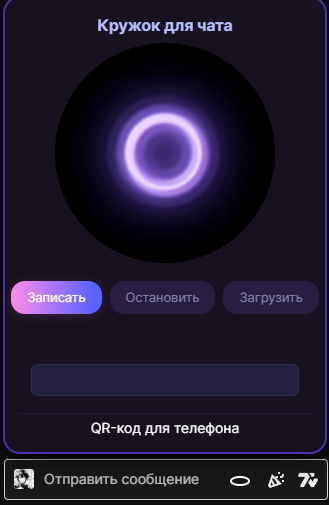

Нажмите "Скачать расширение" и получите .crx-файл.
Подходит для Chrome, Яндекс.Браузера и др. Chromium-браузеров.
2

Установите и включите расширение
Перетащите .crx в chrome://extensions или откройте через меню расширений.
В Chrome Web Store установка — в 1 клик.
3

Пользуйтесь!
В чатах Twitch появится кнопка "Кружок".
— Записывайте или загружайте своё видео
— Используйте QR-код для телефона
— Получайте прямую ссылку и превью для мгновенного использования.